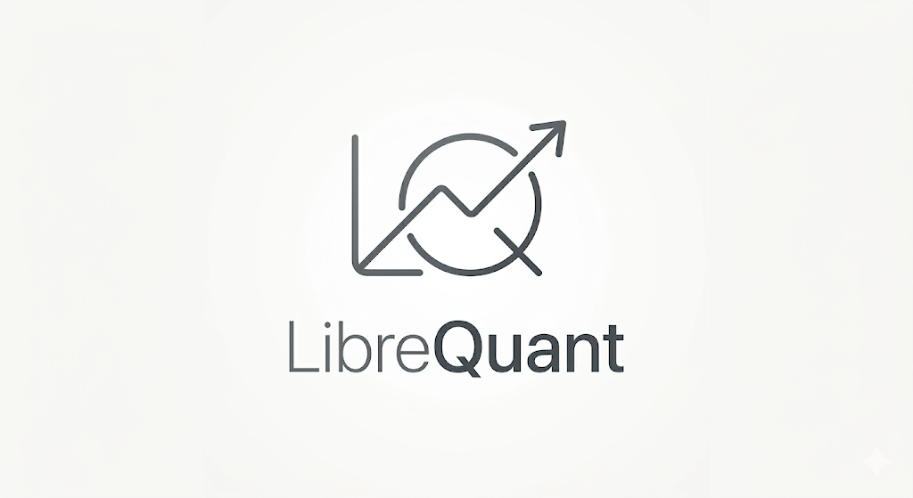

Open source · Local-first · MIT
The Local-First Workbench
for Algorithmic Alpha.
Run everything on your machine: a Next.js browser shell connects to Jupyter for notebooks, hosts strategy editing and data-source controls, and surfaces MLflow experiments—code, keys, and cache stay under your custody, not in a hosted runtime.
You own signal logic, credentials, and how you validate ideas; the workbench keeps research artifacts in one routed UI with loopback-bound services by default.
Design principles
Principles
Jupyter-native execution
Python runs in the notebook kernel (Docker by default). The app speaks the standard Jupyter protocol for contents, kernels, and cells—familiar research tooling, always a local process.
Local custody & credentials
Notebooks, strategies, and data live in your Jupyter workspace volume. API keys stay in .env.local (and sync to the workspace for kernels). Services bind to loopback by default—not a hosted black box.
One workbench for research & experiments
Notebook library, strategy editor, data sources, uploads, and MLflow experiment browsing share one sidebar and header—move between artifacts without juggling separate tools.
Features
Notebooks & kernel
Open and save .ipynb files via the Jupyter Contents API; run cells; use the toolbar for run all, interrupt, reset session, and rename. Search PyPI and install packages into the kernel when your setup allows it.
Strategy library
Browse and edit Python under the strategies tree; new modules ship with a PARAMS dict and signal stub. Notebooks import from the same PYTHONPATH layout Docker provides.
Data & credentials
Configure market data API keys in the Data sources page (stored in .env.local and synced to config/credentials.env in the workspace). Use librequant.data for OHLCV with a local Parquet cache; upload CSVs and browse the data library from the sidebar.
MLflow experiments
Browse runs per strategy (experiment) in the workbench, compare params and metrics, and open the local MLflow Tracking UI from the sidebar (full UI in a new tab). Runs are stored with Postgres and local artifacts from Docker Compose—no cloud MLflow required.
Docker Compose stack
One Compose file brings up Jupyter, PostgreSQL, and MLflow with host loopback ports and a bind-mounted workspace (notebooks, strategies/, cache, and config). Read the repo README for ports, tokens, and security expectations.
In-app guides
A /documentation page in the workbench walks through notebooks, kernel controls, data sources, and strategies—aimed at contributors and advanced users.
Strategy template
1 PARAMS = {
2 "lookback": 20,
3 }
4
5 def signal(prices):
6 # Your signal logic — run from a notebook cellQuick start
From librequant/, npm run dev:stack runs docker compose up -d at the repository root (Jupyter, PostgreSQL, MLflow), waits for Jupyter, then starts Next.js at http://localhost:3000.
git clone https://github.com/TomPCurran/LibreQuant.git
cd LibreQuant/librequant
npm install
npm run dev:stackCompose starts Jupyter (port 8888), MLflow (5000), and Postgres on loopback—see librequant/README.md for NEXT_PUBLIC_* variables (Jupyter URL, token, MLflow UI URL) and SECURITY.md for the local threat model.
FAQ
- How is this different from JupyterLab alone?
- JupyterLab already runs kernels and files. LibreQuant adds a focused Next.js shell: notebook library routes, a strategy editor, data-source and credential management, MLflow experiment browsing, loading states for Jupyter connectivity, and helpers that align PYTHONPATH with Compose—so you spend less time wiring paths, env, and tabs by hand.
- Where does code run?
- Notebook cells execute in the Jupyter kernel (typically inside the Docker container on your machine). The browser shell does not replace the kernel—it connects to it over the standard Jupyter HTTP and WebSocket APIs.
- Where do API keys live?
- Keys for data providers belong in librequant/.env.local (gitignored). Saving from the Data sources UI also writes a synced config/credentials.env into your Jupyter workspace for kernels. Never commit secrets; treat the Jupyter token like a password too (see SECURITY.md).
- What is MLflow used for?
- MLflow stores experiment runs and metrics you log from notebooks (e.g. backtests), with a local server and Postgres backend from Docker Compose. It helps you compare iterations—it does not validate investment merit or replace your own methodology.
- What about risk and backtests?
- The workbench does not validate trading performance for you. Any P&L or risk analysis is whatever you implement in notebooks and libraries—never treat an experiment as production-ready without your own checks and out-of-sample discipline.